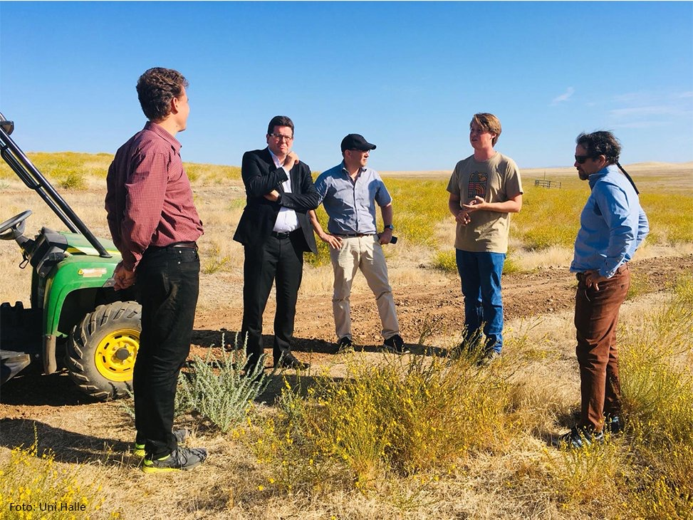
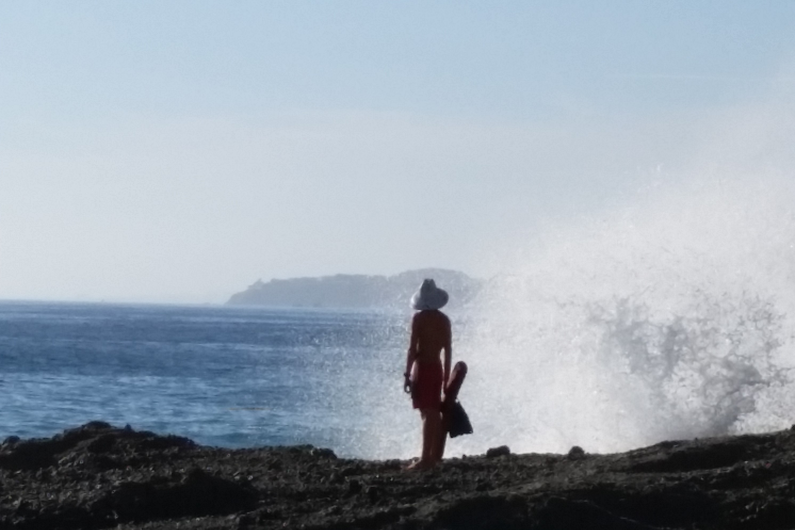

Henry White
Developer.
Who Am I?
Hello!
My name is Henry White and I just graduated from the University of California, Merced with a degree in Computer Science and Engineering!
I am ready to start my career as a Front End Programmer, UI/UX Designer, or Game Developer. I am just kicking off my job search as we roll into 2021, and I am interested in full-time opportunites.
In the meantime, here are some things that I am currently working on, or have recently finished:
Experience
Virtual Experience Designer, X the moonshot factory
In the uncertain times of COVID-19 the need for additional interaction between employees in a work from home environment created a unique opportunity for me.
Using previous knowledge and expertise, I helped create a virtual work environment through the use of Minecraft. Growing up, Minecraft was key in my development as a nerd. I have made countless servers for friends and family, so transitioning to build one for the moonshot factory was easy. My responsibilites included, but are limited to: supporting the design of event programming, training administrators for server maintainence, creation of virtual workspace using scale models, and building fully realized worlds.
This experience has only proven to me, how much I enjoy being a part of the creative process.
Lead Game Designer, Confidential Project

Was the Lead Game Designer for a small, confidential company.
Tasked with creating a game to be used as a bio feedback mechanism. Specifically used for developing mental awareness.
I developed the game using the Unity game engine. Additionally, I utilized the Adobe Creative Suite to create sprite sheets and other key art assets.
This was my first chance to attempt at developing a game in a professional context and the experience was very positive. Based on this success I can't wait to get started on developing another game :).
University of California, Merced

I am a 2020 graduate of the University of California, Merced.
As a student, I majored in Computer Science and Engineering and participated in several projects including the Software Capstone Project, an Engineering Service Learning Team, and the Q-Project. Many of the classes I have taken have had a focus on C and C++ programming.
In my final semester I focused on Front-End Programming and User Interface Design for my Senior Software Capstone. Additionaly, I created the algorithm that was behind the core features of our minimum viable product.
Merced Vernal Pools and Grassland Reserve

From January 2018 to January 2020, I worked as the Intern for the Merced Vernal Pools and Grassland Reserve (MVPGR).
The MVPGR is one of 39 natural reserves in the University of California Natural Reserve System (UCNRS). As the Intern I was tasked with aiding PhD candidate research projects and updating/maintaing the official MVPRG website. Additionally, I was in charge of providing at least 4 tours a semester for faculty and members of the public. Pictured above is me giving a tour to delegates from Martin Luther University in Halle-Wittenburg Germany in September of 2019.
This role was a great learning opportunity and allowed me to develop more capabilites with natural sciences. This experience of working in nature gave me unique insights when solving problems and changed my perspective when creating levels and worlds in game design.
Laguna Beach Department of Marine Safety

From the Summer of 2013 through the Summer of 2016 I worked as an Ocean Lifeguard for the City of Laguna Beach Department of Marine Safety.
The Laguna Beach Department of Marine Safety is a high performing 100 person team working from 20 towers to guard 5.5 miles of coastline and 16.5 miles of ocean. Average summers included rescues of over 3,500 individuals and medical attention to over 4,000. I was named First Year Lifeguard of the year in 2014.
This job exposed me to a physically demanding, mentally arduous, and emotionally stressful work environment that was also incredibly rewarding. This set the bar high for me for what I can contribute and achieve.
 - C++
- C++
- C
 - Python
- Python
- R
- Java
- JavaScript
 - HTML
- HTML
- CSS
 - SQLite
- SQLite
- Adobe Creative Cloud